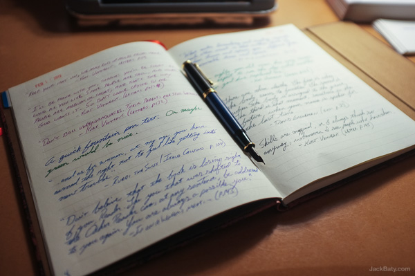

The Commonplace Book
Here's what Wikipedia says about the Commonplace book.
Commonplace books (or commonplaces) were a way to compile knowledge, usually by writing information into books. They became significant in Early Modern Europe.
Such books were essentially scrapbooks filled with items of every kind: medical recipes, quotes, letters, poems, tables of weights and measures, proverbs, prayers, legal formulas. Commonplaces were used by readers, writers, students, and scholars as an aid for remembering useful concepts or facts they had learned. Each commonplace book was unique to its creator's particular interests.
I kept such a commonplace book in high school. Written in it were mostly song lyrics I found meaningful and quotes from whatever book I was reading. It's such fun to go back and look through those things now. It's like reading a journal of my interests, written down by me but authored by other people.
I've decided to start keeping one again, mostly for the same reasons, but also because I find that the physical act of writing provides a better context for things and helps me to remember them. Plus, it gives me an excuse to buy fancy pens and notebooks. Mine looks like this so far:
A side effect of keeping this book is that I now tend to read sitting at my desk, which makes writing easier. I find that this also makes reading somehow more deliberate and also helps me retain more than just those things I decide to record.
Of course I could read books on my Kindle, which would make highlighting and saving passages much faster and easier. I do that, too, but that only helps with finding things later, which is only part of the intent. As the saying goes, "I'm not writing it down to remember it later, I'm writing it down to remember it now."
Besides, the resulting artifact is beautiful and meaningful to me and therefore worth the small amount of additional effort. Paging through a book like this periodically is all sorts of better than using Spotlight to search a folder full of identical-looking text files. Not faster or easier, but still better.